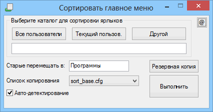

Sort_main_menu
Назначение
Не завершённая программа сортировки главного меню на WinXP. Идея была разложить ярлыки по категориям, но не было идеальной логики сортировки, у каждого свой способ, да и некоторые ярлыки не требовали изменения местоположения, да и меню можно было создать самостоятельно. В общем идея не прижилась. Можно было использовать для себя, но не универсальный вариант для публикации в массы.

Sort_main_menu - сортирует главное меню программ, которое отображается при нажатии кнопки "Пуск". Часто при установки множества программ меню выстраивается в 3 столбца или если режим отображения прокручивается, то приходится долго прокручивать, и становится трудно найти нужный ярлык. В Win7 используется поле поиска, но не каждый знает или помнит имя программы, тем более набрать его на английском языке. Вот здесь и поможет сортировка меню по категориям. При этом оригинальные каталоги не удаляются, они просто перемещаются в отдельный каталог, который можно не просматривать или просматривать только в случае удаления программы.
Существует 2 каталога, которые отображаются в главном меню, это "All Users" и "Имя пользователя". Каждый каталог сортируется отдельно, чтобы более индивидуально выполнять действия.
----------------------- sort_base.cfg -----------------------
В комплекте с программой находится конфигурационный файл sort_base.cfg, вы можете создать несколько файлов конфигураций дописывая индекс, например sort_base1.cfg. Это файл задаёт категорию программы, чтобы правильно сортировать по категориям. Формат файла следующий:
- здесь определяется категория. Ярлык программы, находящийся в этой категории, будет скопирован в этот каталог относительно обрабатываемого каталога. После того как ярлык успешно скопирован, папка программы перемещается в отдельный каталог, например "Программы" в обрабатываемом каталоге (это можно изменить в GUI). Далее каждая строка раздела может принимать один из трёх вариантов записи:
7-Zip
7-Zip\7-Zip File Manager
7-Zip\7-Zip File Manager>7-Zip FM
1 вариант - означает, что имя ярлыка совпадает с именем папки, поэтому имя ярлыка не обязательно указывать.
2 вариант - означает, что имя ярлыка отличается от имени папки и его надо указать
3 вариант - означает, что имя ярлыка требуется ещё и переименовать в более краткое имя или более содержательное.
Часто ярлык совпадает с именем папки, поэтому краткая запись выглядит проще и читабельней. В конце файла есть секции:
<*Move*> - здесь указывается папка, которую нужно просто переместить
<*Ignore*> - здесь указывается папка, которая игнорируется, например системные или те, в которые перемещаются ярлыки.
<*Driver*> - здесь указывается текст, который если содержится в имени папки, то она перемещается в папку "Драйвер"
<*Setting*> - здесь указываются настройки, но пока не все они читаются (планируется сделать возможность ком-строки).
--------------------------------------------------------------------
Автодетектирование
Этот функционал пытается автоматически сортировать программы, которые не указаны в конфигурационном файле. При чтении папки, если в ней существует только один ярлык ссылающийся на EXE-файл (игнорируя деинсталятор), то такой ярлык копируется в папку "Прочее", а папка перемещается в "Программы".
Если в папке находится только один ярлык, то при успешном копировании папка удаляется.
Для теста вы можете сделать копию папки главного меню или даже обработать копию главного меню, тем самым определить устраивает ли выбранный способ сортировки. Кнопка "Backup" копирует выбранную папку в корень программы, делая резервную копию.
Lang.ini - языковой файл. Вы можете сделать GUI на своём языке. Русский и английский есть внутри программы.